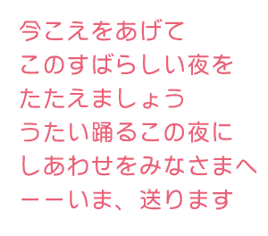
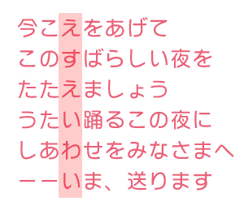

この度はとりにくプレゼンツ出口夫妻を祝おうの謎にご参加いただきましてありがとうございました。
イベントより一週間限定の謎となっておりましたが楽しんでいただけましたでしょうか？
最後までたどり着いたけど解説みたい！回答には至らなかったけど、答えを知りたい！というお客様のために解説編をお届けします！
●第一の謎
一番初めの謎は手元のカードを読み取りこのページにアクセスしてから始まります。
このページには以下の様な問題がかかれていました。
この問題の答えは順番に「さんれつ」「め」「たて」「よめ」となります。
さんれつ、め、たて、よめ=三列目を縦読め
ここで手元のカードに戻ります。
手元のカードには

とかいてあります。
これの三列目を縦によむと

「えすえいわい」=「say」となります。
これをページ下部にありましたフォームに入力すると次のページへ進む事ができます！
●第二の謎
上の謎を解いて次のページに進むと、今度はTwitterへつぶやきを促すボタンが配置されていました。
ボタンを押すと、お祝いのメッセージを書き込んでくれという指示のとなりに #ページの左上をクリック というハッシュタグがついてたはずです。
その指示に従いツイートボタンがあるページの左上をクリックすると最後の謎のページへ進むことができたのです。
●第三の謎
２つの謎をといて最後のページへ進むと、そこには１つのボタンと一緒にとある文章が書かれていました。
ボタンを押すと「パスワードを入力してください」という外部サイト。
パスワードを知るためには書かれていた文章を読み解く必要がありました。
書かれていたのは…
| みさぱせあすはえいしちまえわいぴなまーぴさみーＩえあせぬいーえしすえまわなすみ |
最後の謎は少し面倒な方法になっています。
ヒントの１つ目は「みなさまが狭い枠から飛び出さなくてはいけません。」
そして２つ目は「初心を忘れず」
３つ目は１つだけ混じった英数字「I」
まずはじめにヒント１を読み解きます。
ここで注目すべきは「みなさま」がひらがなであること（下に出てくる文章では皆様が漢字になっています）
そして「枠」を「飛び出す」必要があるということです。
問題文の下に書かれた「枠」に囲まれた謎の「ひらがな」群。
そうこのひらがな郡から「みなさま」を「枠」の外へはじきだします。
そうすると残るのは
| ぱせあすはえいしちえわいぴーぴーＩえあせぬいーえしすえわす |
| ぱすはえいちえいぴーぴーＩえぬいーえすえす |
以上が今回用意させて頂きました謎の解答編となっております。
皆様、楽しんでいただけましたでしょうか？
少しでも楽しい時間を過ごしていただけましたら幸いです。
以上、とりにくでした。
栄一さん、マリエさん。
末永くお幸せに！